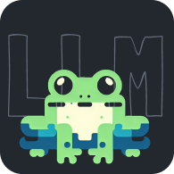

Five providers, one window
Ollama and LM Studio stay on the computer. Codex, Claude Code and OpenCode join through the same settings.

FllamaDesktop client for Ollama, LM Studio, Codex, Claude Code and OpenCode. Nothing is sent to us.
Fllama is a local Electron client. The reply comes from a model on this computer. There is no Fllama cloud.
/Users/you/notes
The agent may read and edit files in this folder. Chat mode does not.
Ollama and LM Studio stay on the computer. Codex, Claude Code and OpenCode join through the same settings.
Chat is a thread with a model. Project points at a folder: the agent may list, read and edit files inside it, and nothing above it.
Headings, lists, tables, fences and tasks render in the thread. Thoughts stay folded until you open them.
| Name | Size | Type |
|---|---|---|
| gemma3:4b | 3.3 GB | base |
| qwen3:8b | 5.2 GB | base |
| llama3.1:8b | 4.9 GB | base |
| deepseek-r1:7b | 4.7 GB | base |
Installed models appear in the list. Fllama does not download them unless you ask Ollama to.
No. Chats and project files stay on the machine. Fllama has no telemetry and no account.
Yes. It is free for personal use and for internal use at a company. Read the GPL v2.0 licence for the exact terms.
Fllama itself, plus the provider you want: Ollama or LM Studio for local models, or Codex, Claude Code or OpenCode if you already use those.
Any model the chosen provider serves. For Ollama that includes Llama, Mistral, Gemma, Qwen and the rest of the Ollama library.
Yes. It lives on GitHub under GPL v2.0.
Chat is a conversation. Project attaches a folder so the agent can read and edit files inside it. OpenCode already has its own tools; Fllama does not stack a second set on top.
Version 1.0.0 for Windows, macOS and Linux. GPL v2.0, free for home and for work.